Simplified detection of urban types¶
Example adapted from the SDSC 2021 Workshop led by Martin Fleischmann. You can see the recording of the workshop on YouTube.
This example illustrates the potential of morphometrics captured by momepy in capturing the structure of cities. We will pick a town, fetch its data from the OpenStreetMap, and analyse it to detect individual types of urban structure within it.
This method is only illustrative and is based on the more extensive one published by Fleischmann et al. (2021) available from https://github.com/martinfleis/numerical-taxonomy-paper.
Fleischmann M, Feliciotti A, Romice O and Porta S (2021) Methodological Foundation of a Numerical Taxonomy of Urban Form. Environment and Planning B: Urban Analytics and City Science, doi: 10.1177/23998083211059835
It depends on the following packages:
- momepy
- osmnx
- clustergram
- scikit-learn
- geopy
- ipywidgets
import geopandas
import matplotlib.pyplot as plt
import momepy
import osmnx
import pandas
from clustergram import Clustergram
from libpysal import graph
Pick a place, ideally a town with a good coverage in OpenStreetMap and its local CRS.
place = "Znojmo, Czechia"
local_crs = 5514
We can interactively explore the place we just selected.
geopandas.tools.geocode(place).explore()
Input data¶
We can use OSMnx to quickly download data from OpenStreetMap. If you intend to download larger areas, we recommend using pyrosm instead.
Buildings¶
buildings = osmnx.features_from_place(place, tags={"building": True})
buildings.head()
| geometry | building | bunker_type | historic | military | name | ref:ropiky.net | source | website | amenity | ... | outdoor_seating | branch | monitoring:water_level | automated | self_service | shelter_type | bridge:support | construction | bench | type | ||
|---|---|---|---|---|---|---|---|---|---|---|---|---|---|---|---|---|---|---|---|---|---|---|
| element | id | |||||||||||||||||||||
| node | 3372076291 | POINT (16.05376 48.84683) | bunker | pillbox | yes | bunker | 7/I/10/A-120 | 1105625216 | ropiky.net | https://ropiky.net/dbase_objekt.php?id=1105625216 | NaN | ... | NaN | NaN | NaN | NaN | NaN | NaN | NaN | NaN | NaN | NaN |
| 3372076393 | POINT (16.05581 48.84158) | bunker | pillbox | yes | bunker | 7/I/11/A-140 Z | 1105625217 | ropiky.net | https://ropiky.net/dbase_objekt.php?id=1105625217 | NaN | ... | NaN | NaN | NaN | NaN | NaN | NaN | NaN | NaN | NaN | NaN | |
| 3372076394 | POINT (16.05867 48.83522) | bunker | pillbox | yes | bunker | 7/I/12/A-220 | 1105625218 | ropiky.net | https://ropiky.net/dbase_objekt.php?id=1105625218 | NaN | ... | NaN | NaN | NaN | NaN | NaN | NaN | NaN | NaN | NaN | NaN | |
| 3372076428 | POINT (16.03949 48.85599) | bunker | pillbox | yes | bunker | 7/I/8/E | 1105625214 | ropiky.net | https://ropiky.net/dbase_objekt.php?id=1105625214 | NaN | ... | NaN | NaN | NaN | NaN | NaN | NaN | NaN | NaN | NaN | NaN | |
| 3749294087 | POINT (16.04696 48.85305) | chapel | NaN | NaN | NaN | NaN | NaN | survey | NaN | place_of_worship | ... | NaN | NaN | NaN | NaN | NaN | NaN | NaN | NaN | NaN | NaN |
5 rows × 139 columns
The OSM input may need a bit of cleaning to ensure only proper polygons are kept.
buildings.geom_type.value_counts()
Polygon 12440
Point 6
Name: count, dtype: int64
buildings = buildings[buildings.geom_type == "Polygon"].reset_index(drop=True)
And we should re-project the data from WGS84 to the local projection in meters (momepy default values assume meters not feet or degrees). We will also drop unnecessary columns.
buildings = buildings[["geometry"]].to_crs(local_crs)
buildings.head()
| geometry | |
|---|---|
| 0 | POLYGON ((-643052.212 -1193474.914, -643069.77... |
| 1 | POLYGON ((-642796.708 -1193674.586, -642795.74... |
| 2 | POLYGON ((-642960.567 -1193475.288, -642969.02... |
| 3 | POLYGON ((-642973.521 -1193481.346, -642960.58... |
| 4 | POLYGON ((-642972.411 -1193762.425, -642979.76... |
Streets¶
Similar operations are done with streets.
osm_graph = osmnx.graph_from_place(place, network_type="drive")
osm_graph = osmnx.projection.project_graph(osm_graph, to_crs=local_crs)
streets = osmnx.graph_to_gdfs(
osmnx.convert.to_undirected(osm_graph),
nodes=False,
edges=True,
node_geometry=False,
fill_edge_geometry=True,
).reset_index(drop=True)
streets.head()
| osmid | highway | maxspeed | name | ref | oneway | reversed | length | from | to | geometry | lanes | bridge | width | tunnel | junction | access | |
|---|---|---|---|---|---|---|---|---|---|---|---|---|---|---|---|---|---|
| 0 | 33733060 | secondary | 50 | Přímětická | 361 | False | True | 24.573585 | 639231391 | 74103628 | LINESTRING (-643229.639 -1192872.949, -643239.... | NaN | NaN | NaN | NaN | NaN | NaN |
| 1 | 33733060 | secondary | 50 | Přímětická | 361 | False | False | 60.345697 | 3775990798 | 74103628 | LINESTRING (-643236.395 -1192790.304, -643236.... | NaN | NaN | NaN | NaN | NaN | NaN |
| 2 | 50313252 | residential | NaN | Raisova | NaN | True | False | 74.762885 | 639231413 | 74103628 | LINESTRING (-643291.344 -1192797.012, -643288.... | NaN | NaN | NaN | NaN | NaN | NaN |
| 3 | 33733060 | secondary | 50 | Přímětická | 361 | False | True | 54.260241 | 74142638 | 639231391 | LINESTRING (-643205.434 -1192921.533, -643219.... | NaN | NaN | NaN | NaN | NaN | NaN |
| 4 | 50313241 | residential | NaN | Mičurinova | NaN | True | False | 104.235768 | 639231391 | 639231314 | LINESTRING (-643229.639 -1192872.949, -643233.... | NaN | NaN | NaN | NaN | NaN | NaN |
We can also do some preprocessing using momepy to ensure we have proper network topology.
streets = momepy.remove_false_nodes(streets)
streets = streets[["geometry"]]
/tmp/ipykernel_4155/2560506308.py:1: FutureWarning: `remove_false_nodes` is deprecated and will be removed in momepy 1.0. The function has been improved and moved to the `neatnet` package and can be used as `neatnet.remove_interstitial_nodes`. See https://uscuni.org/neatnet for details.
streets = momepy.remove_false_nodes(streets)
streets.head()
| geometry | |
|---|---|
| 0 | LINESTRING (-643229.639 -1192872.949, -643239.... |
| 1 | LINESTRING (-643236.395 -1192790.304, -643236.... |
| 2 | LINESTRING (-643291.344 -1192797.012, -643288.... |
| 3 | LINESTRING (-643205.434 -1192921.533, -643219.... |
| 4 | LINESTRING (-643229.639 -1192872.949, -643233.... |
Generated data¶
Tessellation¶
Given building footprints:

We can generate a spatial unit using morphological tessellation:

limit = momepy.buffered_limit(buildings, "adaptive")
tessellation = momepy.morphological_tessellation(buildings, clip=limit)
OpenStreetMap data are often problematic due to low quality of some polygons. If some collapse, we get a mismatch between the length of buildings and the length of polygons.
collapsed, _ = momepy.verify_tessellation(tessellation, buildings)
/tmp/ipykernel_4155/3509021287.py:1: UserWarning: Tessellation does not fully match buildings. 21 element(s) disappeared during generation. Index of the affected elements: Index([ 3976, 3986, 4195, 4203, 4206, 4233, 4237, 4238, 4242, 8508,
8735, 8987, 8998, 9020, 10418, 10634, 10635, 11202, 11416, 11417,
11421],
dtype='int64').
collapsed, _ = momepy.verify_tessellation(tessellation, buildings)
/tmp/ipykernel_4155/3509021287.py:1: UserWarning: Tessellation contains MultiPolygon elements. Initial objects should be edited. Index of affected elements: [52, 200, 260, 569, 572, 573, 583, 683, 834, 1387, 1670, 1675, 1676, 1680, 1682, 1688, 1697, 1732, 1741, 2367, 2910, 2941, 2956, 3195, 3801, 4190, 4682, 4739, 4939, 5127, 5181, 5479, 5685, 5784, 6026, 6129, 6356, 6363, 6368, 6399, 6544, 6570, 6627, 6952, 7165, 7213, 7230, 7356, 7357, 7358, 7359, 7360, 7362, 7363, 7364, 7365, 7367, 7369, 7370, 7373, 7374, 7375, 7376, 7457, 7459, 7460, 7465, 7707, 7809, 7936, 8397, 8405, 8416, 8418, 8504, 8733, 8869, 8906, 9414, 9427, 9441, 9566, 9757, 9808, 9820, 9945, 10012, 10039, 10165, 10271, 10456, 10606, 10945, 11000, 11212, 11409, 11672, 11722, 11813, 11966, 12218].
collapsed, _ = momepy.verify_tessellation(tessellation, buildings)
Better to drop affected buildings and re-create tessellation.
buildings = buildings.drop(collapsed)
limit = momepy.buffered_limit(buildings, "adaptive")
tessellation = momepy.morphological_tessellation(buildings, clip=limit)
Check the result.
tessellation.shape[0] == buildings.shape[0]
True
Link streets¶
Link unique IDs of streets to buildings and tessellation cells based on the nearest neighbor join.
buildings["street_index"] = momepy.get_nearest_street(
buildings, streets, max_distance=100
)
buildings
| geometry | street_index | |
|---|---|---|
| 0 | POLYGON ((-643052.212 -1193474.914, -643069.77... | 510.0 |
| 1 | POLYGON ((-642796.708 -1193674.586, -642795.74... | 375.0 |
| 2 | POLYGON ((-642960.567 -1193475.288, -642969.02... | 521.0 |
| 3 | POLYGON ((-642973.521 -1193481.346, -642960.58... | 521.0 |
| 4 | POLYGON ((-642972.411 -1193762.425, -642979.76... | 388.0 |
| ... | ... | ... |
| 12435 | POLYGON ((-643183.871 -1193529.43, -643177.985... | 993.0 |
| 12436 | POLYGON ((-643140.981 -1193566.64, -643142.48 ... | 500.0 |
| 12437 | POLYGON ((-643098.488 -1193465.78, -643100.069... | 504.0 |
| 12438 | POLYGON ((-643128.167 -1193485.844, -643130.59... | 504.0 |
| 12439 | POLYGON ((-643448.699 -1193200.507, -643451.89... | 593.0 |
12419 rows × 2 columns
Aattach the network index to the tessellation as well.
tessellation["street_index"] = buildings["street_index"]
Measure¶
Measure individual morphometric characters. For details see the User Guide and the API reference.
Dimensions¶
buildings["building_area"] = buildings.area
tessellation["tess_area"] = tessellation.area
streets["length"] = streets.length
Shape¶
buildings["eri"] = momepy.equivalent_rectangular_index(buildings)
buildings["elongation"] = momepy.elongation(buildings)
tessellation["convexity"] = momepy.convexity(tessellation)
streets["linearity"] = momepy.linearity(streets)
fig, ax = plt.subplots(1, 2, figsize=(24, 12))
buildings.plot("eri", ax=ax[0], scheme="natural_breaks", legend=True)
buildings.plot("elongation", ax=ax[1], scheme="natural_breaks", legend=True)
ax[0].set_axis_off()
ax[1].set_axis_off()
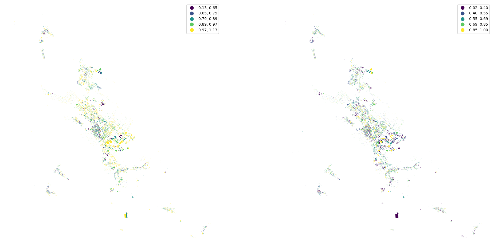
fig, ax = plt.subplots(1, 2, figsize=(24, 12))
tessellation.plot("convexity", ax=ax[0], scheme="natural_breaks", legend=True)
streets.plot("linearity", ax=ax[1], scheme="natural_breaks", legend=True)
ax[0].set_axis_off()
ax[1].set_axis_off()
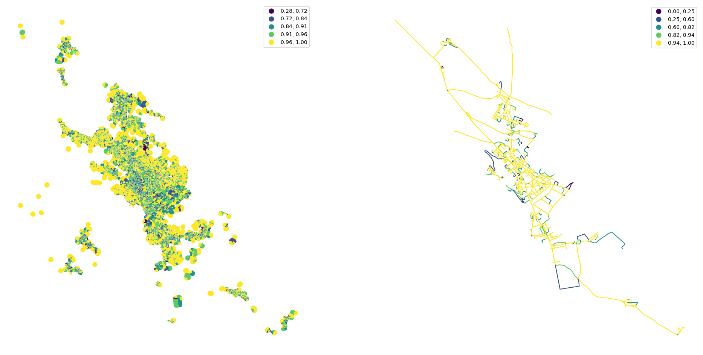
Spatial distribution¶
buildings["shared_walls"] = momepy.shared_walls(buildings) / buildings.length
buildings.plot(
"shared_walls", figsize=(12, 12), scheme="natural_breaks", legend=True
).set_axis_off()
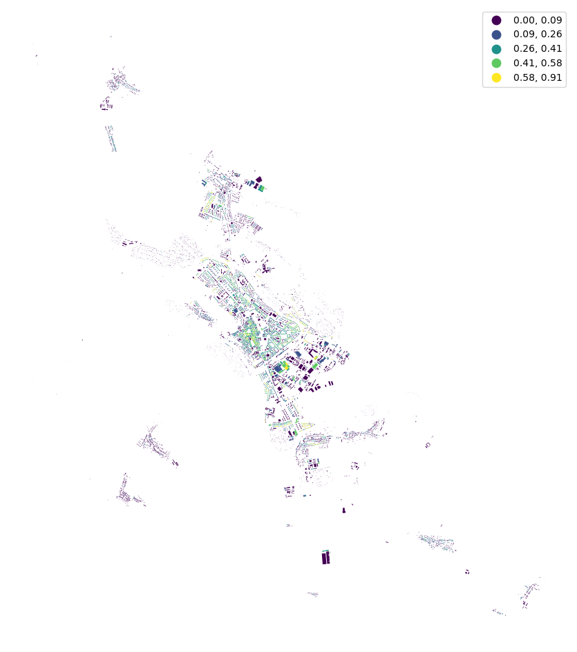
Generate spatial graph using libpysal.
queen_1 = graph.Graph.build_contiguity(tessellation, rook=False)
tessellation["neighbors"] = momepy.neighbors(
tessellation, queen_1, weighted=True
)
tessellation["covered_area"] = queen_1.describe(tessellation.area)["sum"]
buildings["neighbor_distance"] = momepy.neighbor_distance(buildings, queen_1)
fig, ax = plt.subplots(1, 2, figsize=(24, 12))
buildings.plot(
"neighbor_distance", ax=ax[0], scheme="natural_breaks", legend=True
)
tessellation.plot(
"covered_area", ax=ax[1], scheme="natural_breaks", legend=True
)
ax[0].set_axis_off()
ax[1].set_axis_off()
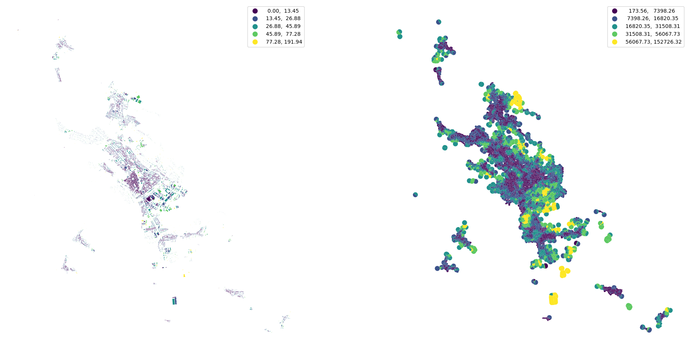
queen_3 = queen_1.higher_order(3)
buildings_q1 = graph.Graph.build_contiguity(buildings, rook=False)
buildings["interbuilding_distance"] = momepy.mean_interbuilding_distance(
buildings, queen_1, queen_3
)
buildings["adjacency"] = momepy.building_adjacency(buildings_q1, queen_3)
/home/runner/micromamba/envs/documentation/lib/python3.14/site-packages/momepy/distribution.py:377: RuntimeWarning: invalid value encountered in scalar divide
mean_distances[i] = sub_matrix.sum() / sub_matrix.nnz
fig, ax = plt.subplots(1, 2, figsize=(24, 12))
buildings.plot(
"interbuilding_distance", ax=ax[0], scheme="natural_breaks", legend=True
)
buildings.plot("adjacency", ax=ax[1], scheme="natural_breaks", legend=True)
ax[0].set_axis_off()
ax[1].set_axis_off()
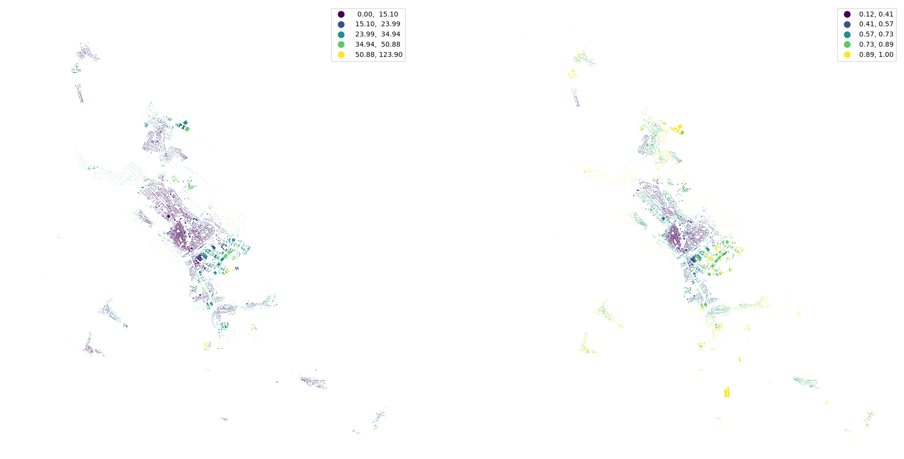
profile = momepy.street_profile(streets, buildings)
streets[profile.columns] = profile
fig, ax = plt.subplots(1, 3, figsize=(24, 12))
streets.plot("width", ax=ax[0], scheme="natural_breaks", legend=True)
streets.plot("width_deviation", ax=ax[1], scheme="natural_breaks", legend=True)
streets.plot("openness", ax=ax[2], scheme="natural_breaks", legend=True)
ax[0].set_axis_off()
ax[1].set_axis_off()
ax[2].set_axis_off()
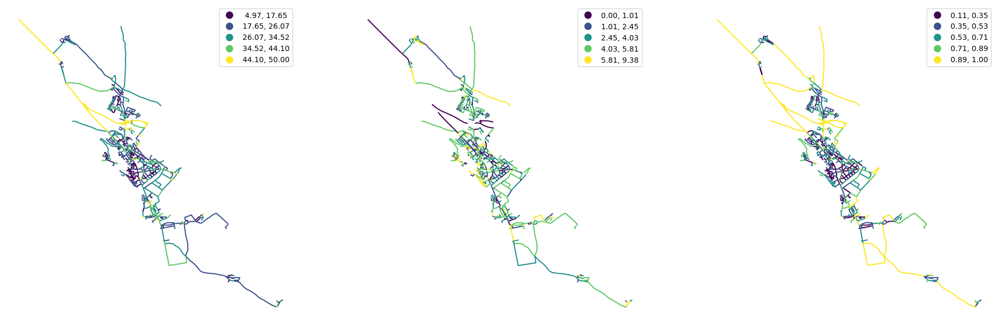
Intensity¶
tessellation["car"] = buildings.area / tessellation.area
tessellation.plot(
"car", figsize=(12, 12), vmin=0, vmax=1, legend=True
).set_axis_off()
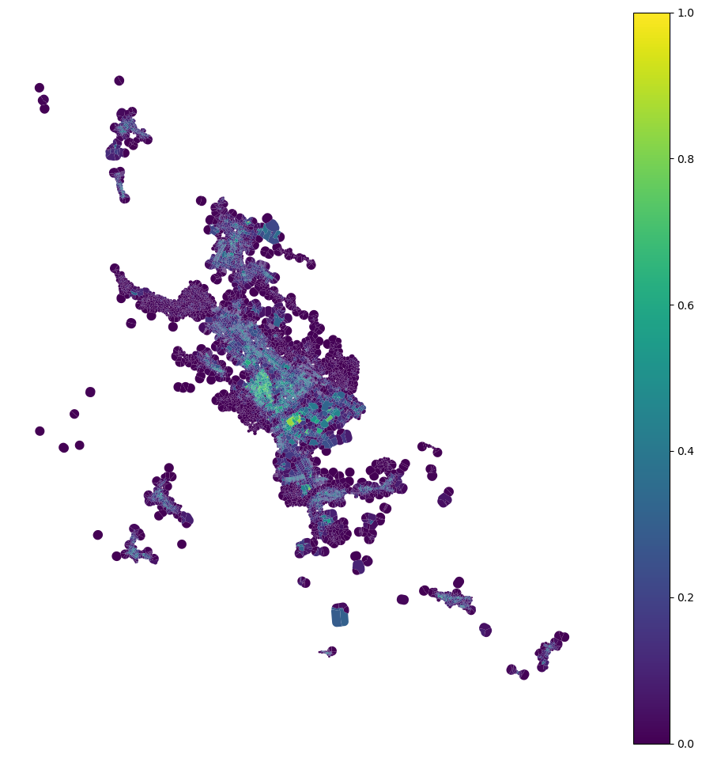
Connectivity¶
graph = momepy.gdf_to_nx(streets)
graph = momepy.node_degree(graph)
graph = momepy.closeness_centrality(graph, radius=400, distance="mm_len")
graph = momepy.meshedness(graph, radius=400, distance="mm_len")
nodes, edges = momepy.nx_to_gdf(graph)
fig, ax = plt.subplots(1, 3, figsize=(24, 12))
nodes.plot(
"degree", ax=ax[0], scheme="natural_breaks", legend=True, markersize=1
)
nodes.plot(
"closeness",
ax=ax[1],
scheme="natural_breaks",
legend=True,
markersize=1,
legend_kwds={"fmt": "{:.6f}"},
)
nodes.plot(
"meshedness", ax=ax[2], scheme="natural_breaks", legend=True, markersize=1
)
ax[0].set_axis_off()
ax[1].set_axis_off()
ax[2].set_axis_off()
/home/runner/micromamba/envs/documentation/lib/python3.14/site-packages/mapclassify/classifiers.py:689: UserWarning: Not enough unique values in array to form 5 classes. Setting k to 4.
self._classify()
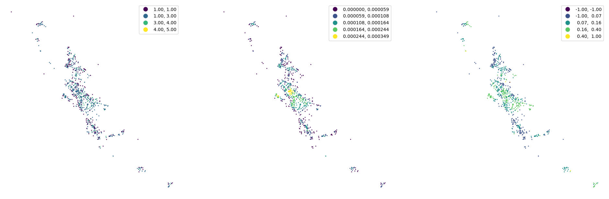
buildings["edge_index"] = momepy.get_nearest_street(buildings, edges)
buildings["node_index"] = momepy.get_nearest_node(
buildings, nodes, edges, buildings["edge_index"]
)
Link all data together (to tessellation cells or buildings).
tessellation.head()
| geometry | street_index | tess_area | convexity | neighbors | covered_area | car | |
|---|---|---|---|---|---|---|---|
| 0 | POLYGON ((-643027.254 -1193482.952, -643031.14... | 510.0 | 1570.760719 | 0.944061 | 0.049921 | 4612.850094 | 0.490475 |
| 1 | POLYGON ((-642853.179 -1193723.748, -642853.77... | 375.0 | 4683.653933 | 0.886292 | 0.042576 | 13751.851395 | 0.390842 |
| 2 | POLYGON ((-642983.939 -1193470.454, -642981.28... | 521.0 | 677.122280 | 0.855853 | 0.067580 | 3190.052520 | 0.786457 |
| 3 | POLYGON ((-642989.083 -1193506.476, -642990.21... | 521.0 | 1289.763991 | 0.918215 | 0.057808 | 3885.094908 | 0.593375 |
| 4 | POLYGON ((-642981.974 -1193756.089, -642982.16... | 388.0 | 1110.536283 | 0.824523 | 0.072330 | 6966.791366 | 0.748308 |
buildings.head()
| geometry | street_index | building_area | eri | elongation | shared_walls | neighbor_distance | interbuilding_distance | adjacency | edge_index | node_index | |
|---|---|---|---|---|---|---|---|---|---|---|---|
| 0 | POLYGON ((-643052.212 -1193474.914, -643069.77... | 510.0 | 770.419570 | 0.742491 | 0.971708 | 0.000000 | 7.533535 | 4.062282 | 0.303030 | 707.0 | 428.0 |
| 1 | POLYGON ((-642796.708 -1193674.586, -642795.74... | 375.0 | 1830.570622 | 0.544350 | 0.850052 | 0.194888 | 15.770806 | 9.982065 | 0.352941 | 229.0 | 123.0 |
| 2 | POLYGON ((-642960.567 -1193475.288, -642969.02... | 521.0 | 532.527489 | 0.646696 | 0.629207 | 0.499747 | 1.894416 | 5.967325 | 0.310345 | 577.0 | 331.0 |
| 3 | POLYGON ((-642973.521 -1193481.346, -642960.58... | 521.0 | 765.313279 | 0.630997 | 0.734407 | 0.301092 | 4.253296 | 4.196014 | 0.225000 | 577.0 | 435.0 |
| 4 | POLYGON ((-642972.411 -1193762.425, -642979.76... | 388.0 | 831.023404 | 0.618086 | 0.273948 | 0.444967 | 4.196437 | 6.480408 | 0.268293 | 582.0 | 338.0 |
tessellation[buildings.columns.drop(["geometry", "street_index"])] = (
buildings.drop(columns=["geometry", "street_index"])
)
merged = tessellation.merge(
edges.drop(columns="geometry"),
left_on="edge_index",
right_index=True,
how="left",
)
merged = merged.merge(
nodes.drop(columns="geometry"),
left_on="node_index",
right_index=True,
how="left",
)
merged.columns
Index(['geometry', 'street_index', 'tess_area', 'convexity', 'neighbors',
'covered_area', 'car', 'building_area', 'eri', 'elongation',
'shared_walls', 'neighbor_distance', 'interbuilding_distance',
'adjacency', 'edge_index', 'node_index', 'length', 'linearity', 'width',
'openness', 'width_deviation', 'mm_len', 'node_start', 'node_end', 'x',
'y', 'degree', 'closeness', 'meshedness', 'nodeID'],
dtype='str')
Understanding the context¶
Measure first, second and third quartile of distribution of values within an area around each building.
percentiles = []
for column in merged.columns.drop(
[
"street_index",
"node_index",
"edge_index",
"nodeID",
"mm_len",
"node_start",
"node_end",
"geometry",
]
):
perc = momepy.percentile(merged[column], queen_3)
perc.columns = [f"{column}_" + str(x) for x in perc.columns]
percentiles.append(perc)
percentiles_joined = pandas.concat(percentiles, axis=1)
percentiles_joined.head()
| tess_area_25 | tess_area_50 | tess_area_75 | convexity_25 | convexity_50 | convexity_75 | neighbors_25 | neighbors_50 | neighbors_75 | covered_area_25 | ... | y_75 | degree_25 | degree_50 | degree_75 | closeness_25 | closeness_50 | closeness_75 | meshedness_25 | meshedness_50 | meshedness_75 | |
|---|---|---|---|---|---|---|---|---|---|---|---|---|---|---|---|---|---|---|---|---|---|
| focal | |||||||||||||||||||||
| 0 | 232.818191 | 328.459657 | 530.088197 | 0.858216 | 0.893274 | 0.955865 | 0.065174 | 0.073930 | 0.083907 | 2023.547812 | ... | -1.193414e+06 | 3.0 | 3.0 | 3.0 | 0.000131 | 0.000181 | 0.000182 | 0.164179 | 0.186511 | 0.215686 |
| 1 | 239.815210 | 533.779538 | 834.138716 | 0.874198 | 0.913986 | 0.971472 | 0.044209 | 0.053862 | 0.079564 | 2697.795438 | ... | -1.193642e+06 | 3.0 | 3.0 | 4.0 | 0.000138 | 0.000154 | 0.000157 | 0.123288 | 0.138462 | 0.156863 |
| 2 | 162.689121 | 314.811852 | 641.571428 | 0.868671 | 0.912821 | 0.965460 | 0.053447 | 0.066875 | 0.083608 | 2559.747341 | ... | -1.193449e+06 | 3.0 | 3.0 | 3.0 | 0.000131 | 0.000179 | 0.000181 | 0.184615 | 0.215686 | 0.215686 |
| 3 | 211.145757 | 289.914947 | 559.668556 | 0.840993 | 0.896277 | 0.944636 | 0.053661 | 0.066618 | 0.080524 | 2056.505521 | ... | -1.193446e+06 | 3.0 | 3.0 | 3.0 | 0.000131 | 0.000179 | 0.000181 | 0.169014 | 0.215686 | 0.215686 |
| 4 | 241.005229 | 336.842770 | 831.258718 | 0.821091 | 0.905923 | 0.955967 | 0.041497 | 0.059971 | 0.084659 | 2572.369597 | ... | -1.193685e+06 | 3.0 | 4.0 | 4.0 | 0.000138 | 0.000157 | 0.000173 | 0.123288 | 0.138462 | 0.140845 |
5 rows × 66 columns
See the difference between original convexity and spatially lagged one.
fig, ax = plt.subplots(1, 2, figsize=(24, 12))
tessellation.plot("convexity", ax=ax[0], scheme="natural_breaks", legend=True)
merged.plot(
percentiles_joined["convexity_50"].values,
ax=ax[1],
scheme="natural_breaks",
legend=True,
)
ax[0].set_axis_off()
ax[1].set_axis_off()
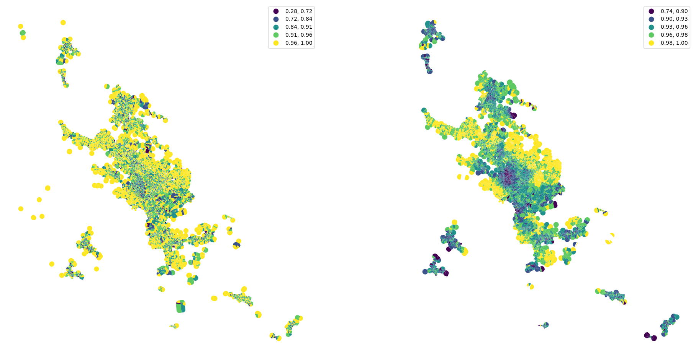
Clustering¶
Now we can use obtained values within a cluster analysis that should detect types of urban structure.
Standardize values before clustering.
standardized = (
percentiles_joined - percentiles_joined.mean()
) / percentiles_joined.std()
standardized.head()
| tess_area_25 | tess_area_50 | tess_area_75 | convexity_25 | convexity_50 | convexity_75 | neighbors_25 | neighbors_50 | neighbors_75 | covered_area_25 | ... | y_75 | degree_25 | degree_50 | degree_75 | closeness_25 | closeness_50 | closeness_75 | meshedness_25 | meshedness_50 | meshedness_75 | |
|---|---|---|---|---|---|---|---|---|---|---|---|---|---|---|---|---|---|---|---|---|---|
| focal | |||||||||||||||||||||
| 0 | -0.415927 | -0.592592 | -0.729011 | -1.311064 | -2.453012 | -1.794598 | 2.357465 | 1.558687 | 0.804859 | -0.713564 | ... | -0.002149 | 0.566409 | 0.248243 | -0.088550 | 1.188635 | 1.641992 | 1.271936 | 0.964513 | 0.894015 | 0.743085 |
| 1 | -0.406567 | -0.410685 | -0.575785 | -0.923592 | -1.645335 | -0.680617 | 0.668655 | 0.332755 | 0.624194 | -0.570478 | ... | -0.113366 | 0.566409 | 0.248243 | 1.385582 | 1.320722 | 1.190898 | 0.882096 | 0.490292 | 0.398047 | 0.261036 |
| 2 | -0.509738 | -0.604683 | -0.672829 | -1.057597 | -1.690781 | -1.109742 | 1.412822 | 1.127714 | 0.792415 | -0.599774 | ... | -0.019245 | 0.566409 | 0.248243 | -0.088550 | 1.188635 | 1.613539 | 1.242189 | 1.201514 | 1.195169 | 0.743085 |
| 3 | -0.444918 | -0.626741 | -0.714104 | -1.728654 | -2.335889 | -2.596093 | 1.430008 | 1.112022 | 0.664158 | -0.706570 | ... | -0.017430 | 0.566409 | 0.248243 | -0.088550 | 1.188635 | 1.609860 | 1.246471 | 1.020585 | 1.195169 | 0.743085 |
| 4 | -0.404976 | -0.585165 | -0.577236 | -2.211174 | -1.959756 | -1.787358 | 0.450175 | 0.705929 | 0.836100 | -0.597096 | ... | -0.134157 | 0.566409 | 1.594374 | 1.385582 | 1.333716 | 1.238541 | 1.119353 | 0.490292 | 0.398047 | 0.129774 |
5 rows × 66 columns
How many clusters?¶
To determine how many clusters we should aim for, we can use a little package called clustergram. See its documentation for details.
cgram = Clustergram(range(1, 12), n_init=10, random_state=42)
cgram.fit(standardized.fillna(0))
cgram.plot();
K=1 skipped. Mean computed from data directly.
K=2 fitted in 0.336 seconds.
K=3 fitted in 0.577 seconds.
K=4 fitted in 0.593 seconds.
K=5 fitted in 0.601 seconds.
K=6 fitted in 0.860 seconds.
K=7 fitted in 0.842 seconds.
K=8 fitted in 0.500 seconds.
K=9 fitted in 0.747 seconds.
K=10 fitted in 0.726 seconds.
K=11 fitted in 0.971 seconds.
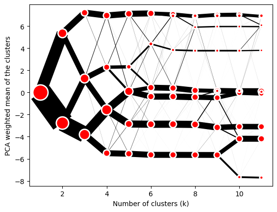
Clustegram gives us also the final labels. (Normally, you would run the final clustering on much larger number of initialisations.)
cgram.labels.head()
| 1 | 2 | 3 | 4 | 5 | 6 | 7 | 8 | 9 | 10 | 11 | |
|---|---|---|---|---|---|---|---|---|---|---|---|
| 0 | 0 | 1 | 1 | 0 | 3 | 2 | 5 | 7 | 0 | 9 | 5 |
| 1 | 0 | 1 | 1 | 0 | 3 | 2 | 5 | 7 | 0 | 9 | 5 |
| 2 | 0 | 1 | 1 | 0 | 3 | 2 | 5 | 7 | 0 | 9 | 5 |
| 3 | 0 | 1 | 1 | 0 | 3 | 2 | 5 | 7 | 0 | 9 | 5 |
| 4 | 0 | 1 | 1 | 0 | 3 | 2 | 5 | 7 | 0 | 9 | 5 |
merged["cluster"] = cgram.labels[10].values
buildings["cluster"] = merged["cluster"]
buildings.plot(
"cluster", categorical=True, figsize=(16, 16), legend=True
).set_axis_off()
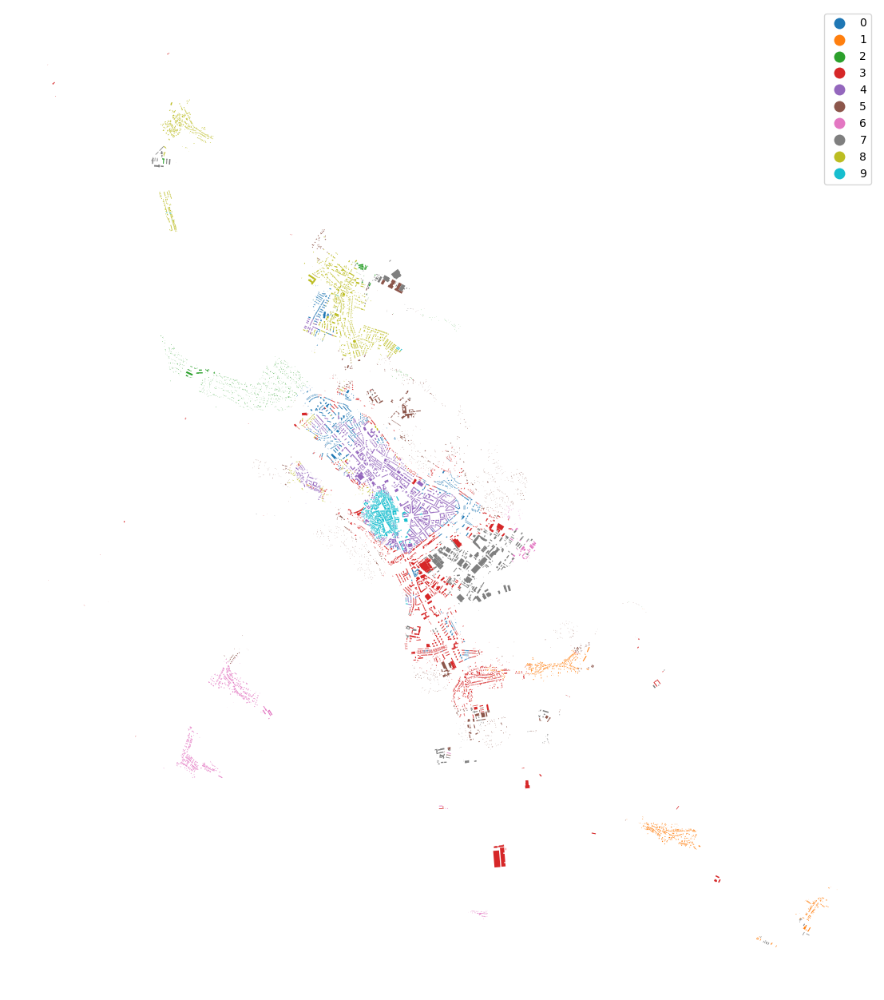
ax = buildings.plot("cluster", categorical=True, figsize=(16, 16), legend=True)
ax.set_xlim(-645000, -641000)
ax.set_ylim(-1195500, -1191000)
ax.set_axis_off()
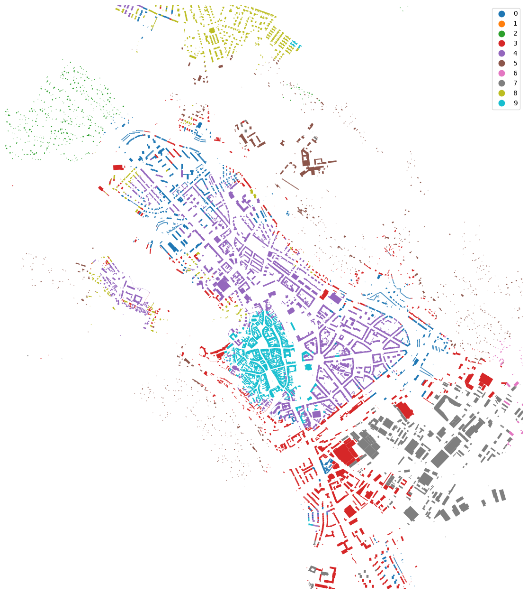